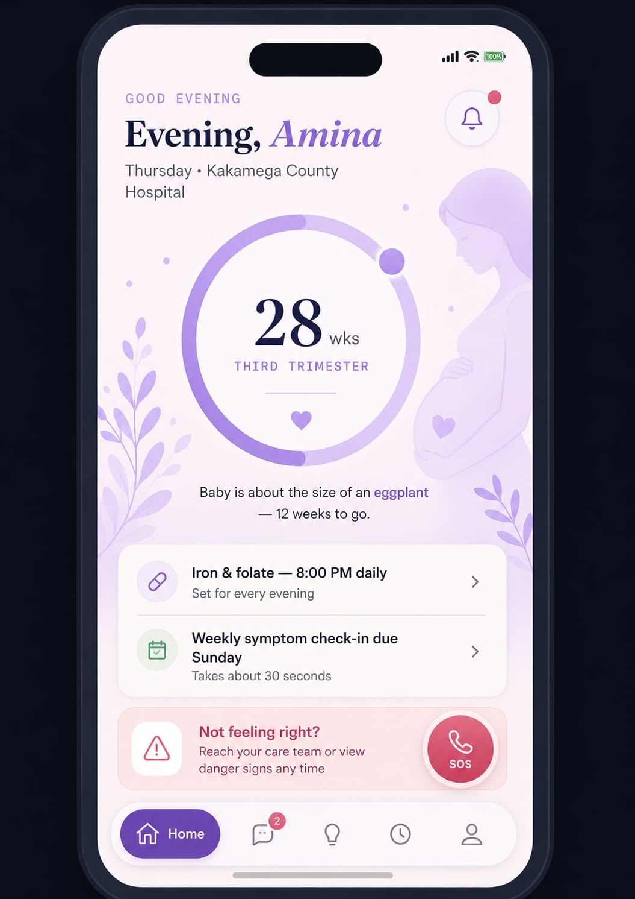
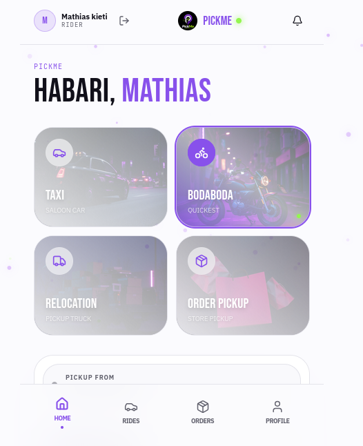
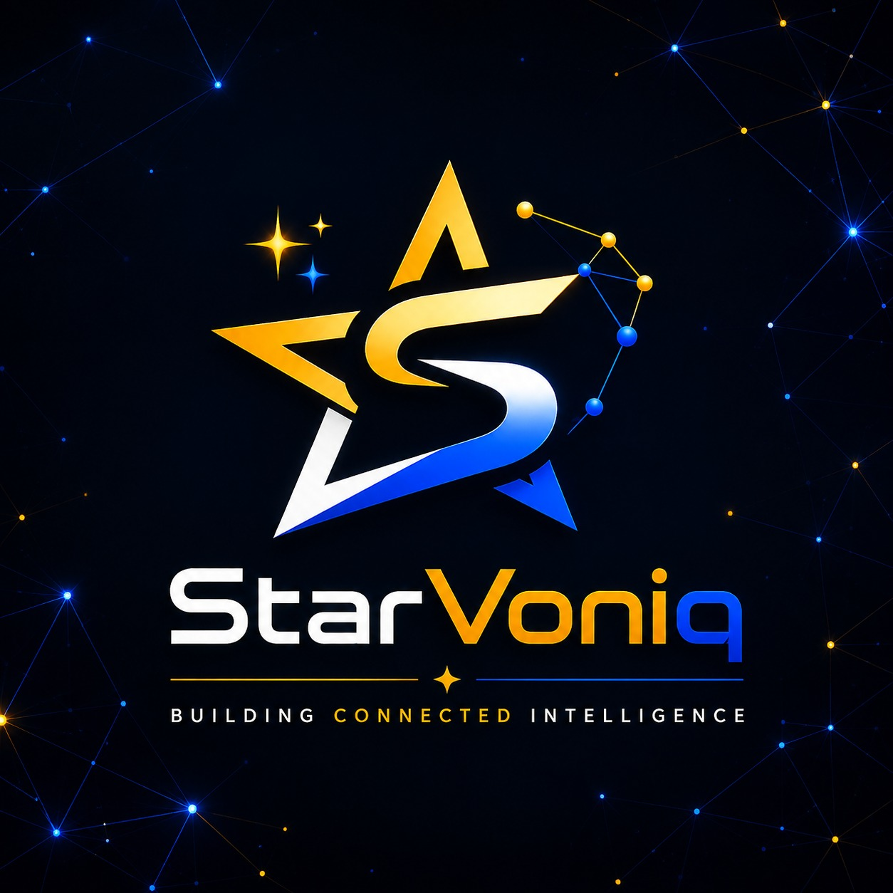

MUNAHealth
Healthcare technology focused on improving maternal-care workflows and access to useful information.
Nairobi, Kenya · Building products
I build software that solves real problems — from healthcare and mobility products to AI-powered tools and practical web systems.
// selected work

Healthcare technology focused on improving maternal-care workflows and access to useful information.

A mobility platform inspired by ride-hailing apps, with parcel delivery built into the experience.

Technology and operations work around building and executing products and business systems.
// a little about me
I'm a Computer Science student at Dedan Kimathi University of Technology with a strong interest in software engineering, AI and product development. My work increasingly sits at the intersection of code, users and business decisions.